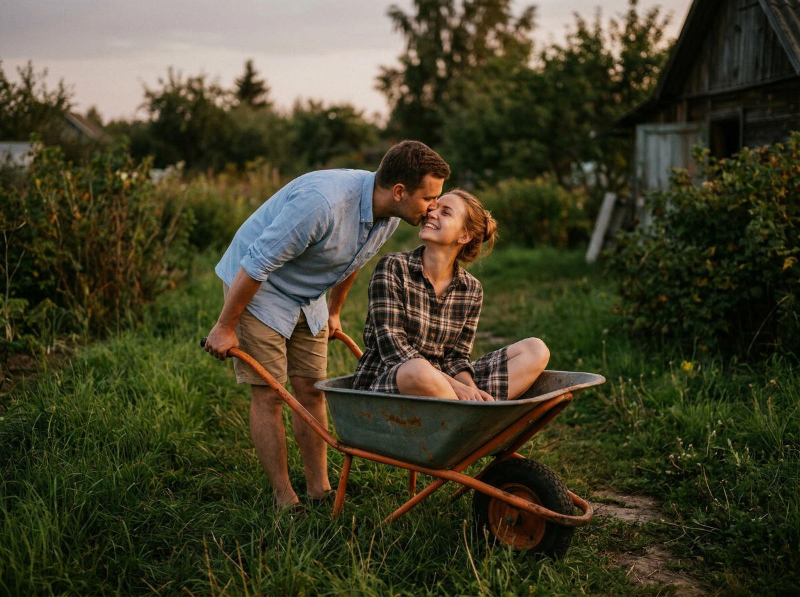
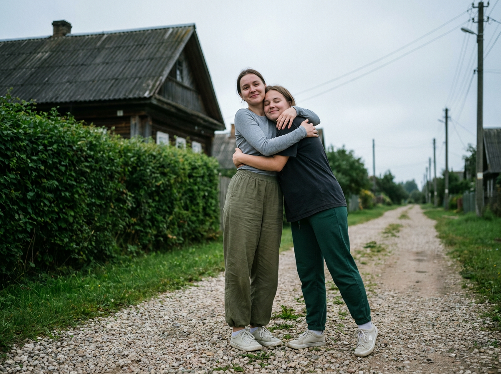
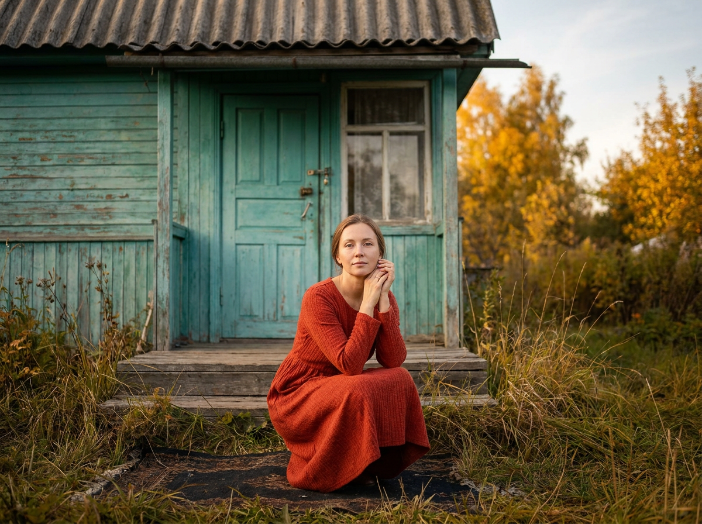
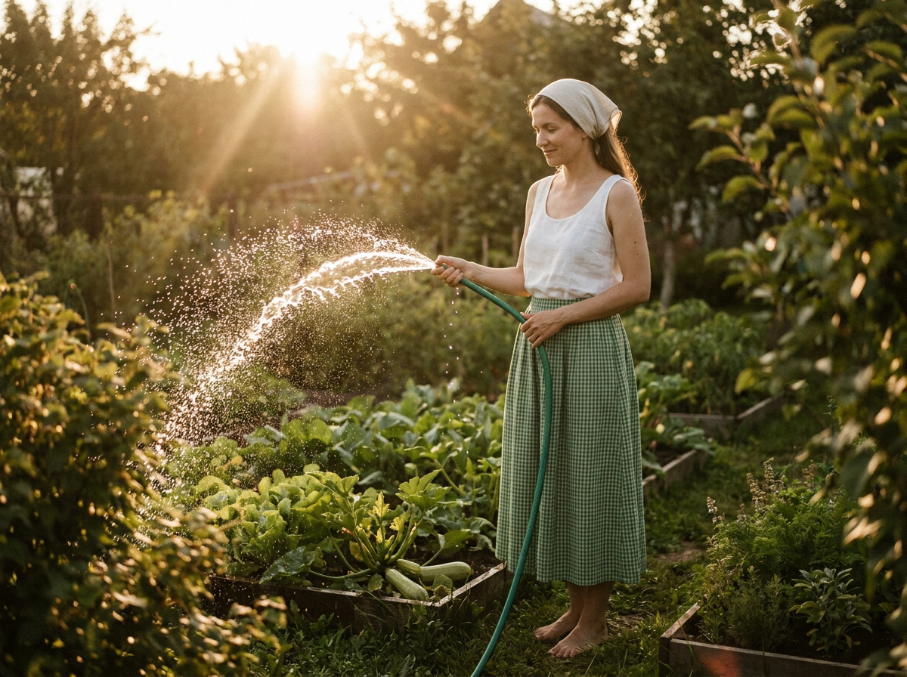
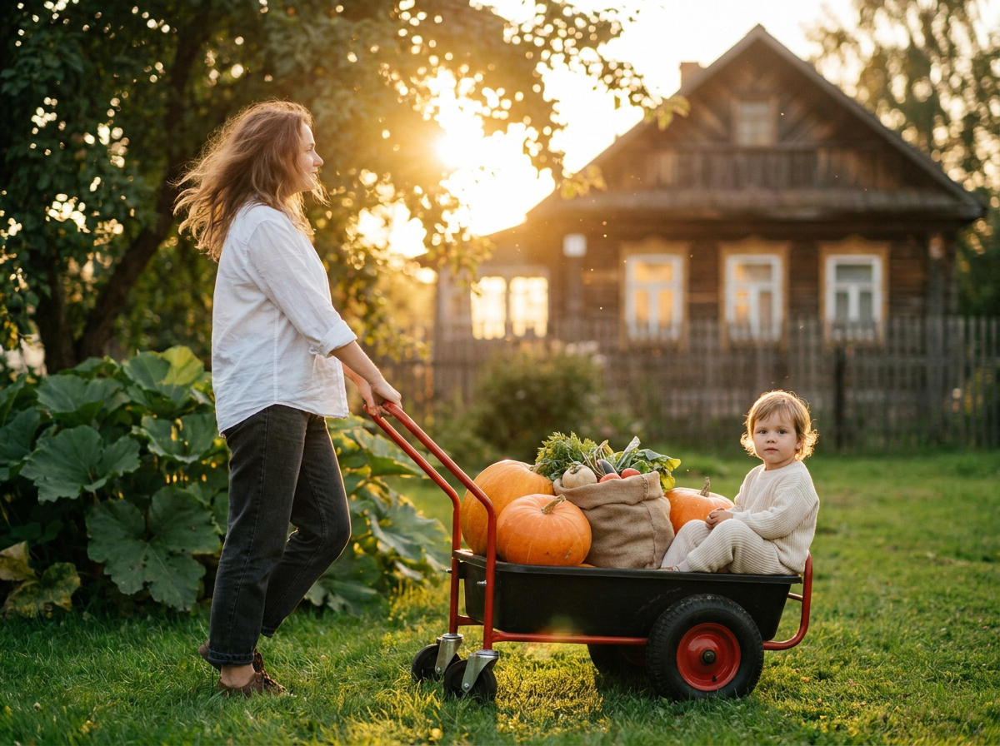
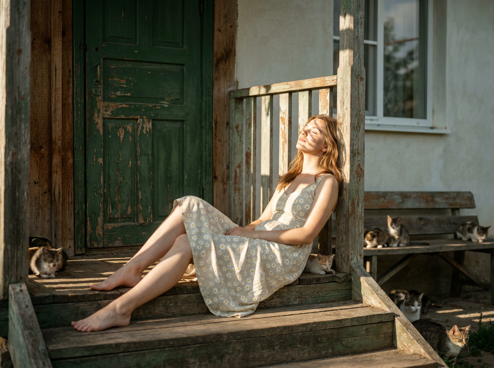
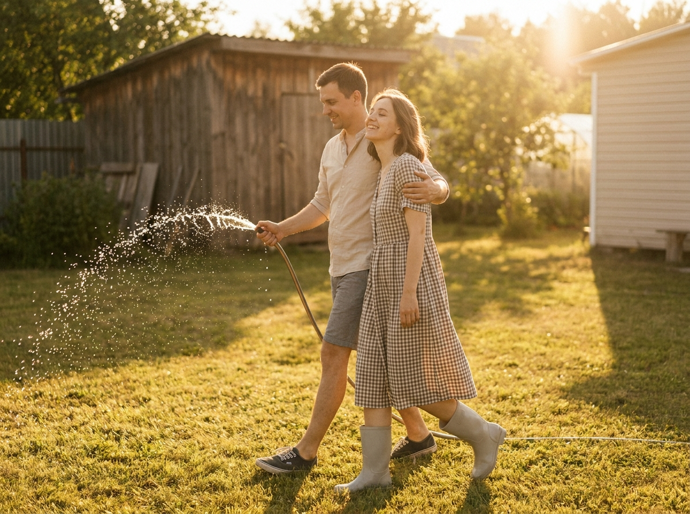
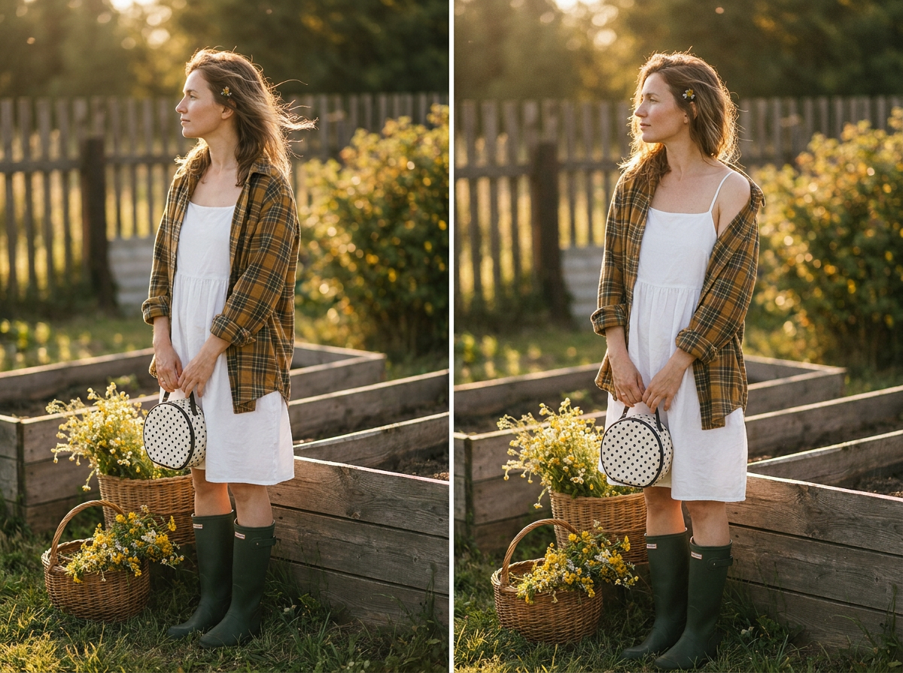
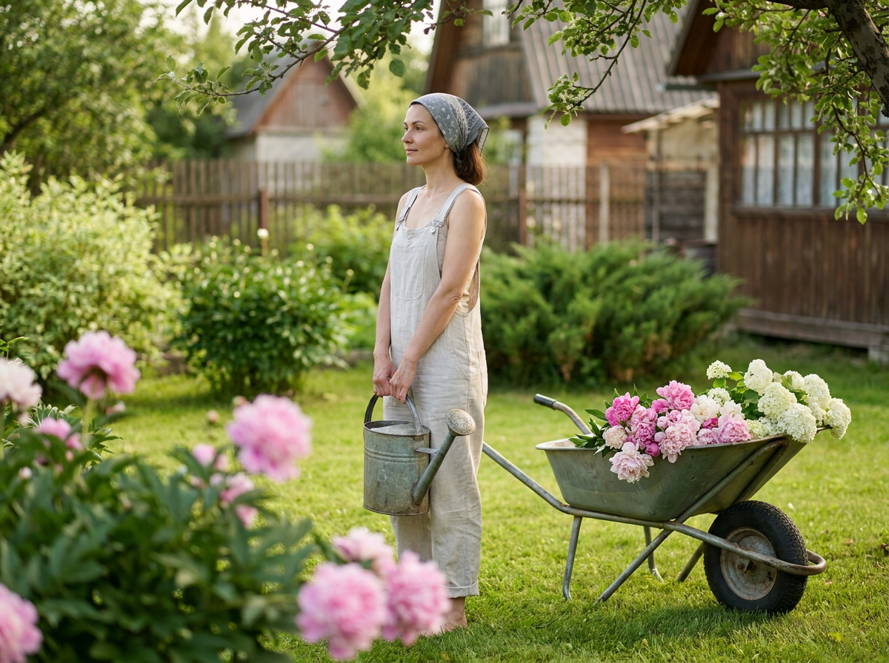
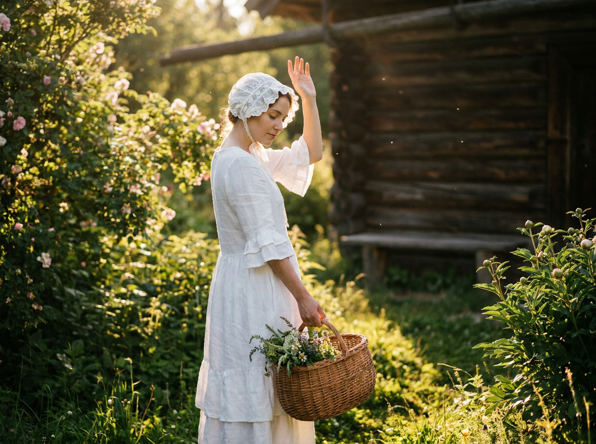

ИИ-фото на даче: 10 промптов для нейросети

Обычная фотография на даче не всегда получается удачной: солнце слепит, фон выглядит случайным, а поза быстро становится натянутой. Генерация помогает собрать нужный свет, настроение и детали в одном кадре — даже если подходящего снимка под рукой нет.
В подборке — десять сценариев для семейных и одиночных ИИ-фото: от объятий на гравийной дорожке и прогулки с тачкой до полива грядок, цветущего сада и отдыха на крыльце старого дома.
Как сгенерировать такое фото: пошагово
Нужен снимок анфас при ровном свете, лицо в кадре целиком, без тёмных очков и головных уборов. Разрешение от 1000 пикселей по короткой стороне. Чем чётче исходник, тем точнее модель повторит черты.
Выберите сценарий ниже и нажмите «Копировать» — текст уйдёт в буфер целиком, вместе с командой сохранения внешности. Эта команда стоит первой строкой и отвечает за то, чтобы на выходе было ваше лицо, а не случайное.
Кнопка «Сгенерировать» рядом с каждым промптом открывает модель в новой вкладке. Nano Banana Pro работает с референсом лица — в отличие от моделей, которые генерируют портрет с нуля и узнаваемость теряют.
Промпт — в поле ввода, портрет — через загрузку референса. Порядок значения не имеет, но без референса команда сохранения внешности работать не будет: модели нечего сохранять.
Для сторис и ленты берите 9:16, для превью и обложек — 4:3. Первый результат редко идеален: если поза или свет ушли не туда, поправьте соответствующую часть промпта и запустите заново. Обычно хватает двух-трёх итераций.
10 промптов для генерации
1. Поцелуй у садовой тачки
Строго сохранить внешность по загруженному референсу: черты лица, пропорции, мимику и текстуру кожи без изменений. Фотореалистичный lifestyle-кадр во дворе дачи, вертикальная композиция, тёплая слегка кинематографичная цветопередача, натуральная трава и садовый фон. В центре внимания оранжевая садовая тачка с металлическим кузовом: внутри расслабленно сидит улыбающаяся женщина, рядом молодой мужчина наклоняется над кузовом и целует её. Передать нежность, домашнюю близость и ощущение семейного момента без постановочной напряжённости. Мужчина одет в светлую пастельную рубашку или лонгслив, нейтральные шорты либо лёгкие брюки и тёмно-коричневые сандалии. На женщине мягкий домашний образ с клетчатым платьем, комбинезоном или рубашкой; обувь удобная, допустимы босые ноги. Естественная мимика и анатомичные пропорции, лица точно соответствуют загруженному референсу.
2. Объятия на дачной дороге

Строго сохранить внешность по загруженному референсу: черты лица, пропорции, мимику и текстуру кожи без изменений. Документальная фотореалистичная уличная фотография, вертикальный кадр, спокойное тёплое настроение. Две девушки обнимаются на гравийной дорожке в дачном посёлке. Одна стоит лицом к камере и обхватывает вторую за плечи и спину; вторая слегка наклоняется в объятие, улыбается или прикрывает глаза. Слева — высокий густой кустарник и живая изгородь, за ними деревянный дом с потёртыми панелями, тёмной крышей, окнами или ставнями. Справа узкая дорога уходит вдаль между кустами. На заднем плане видны столбы и многочисленные провода, уходящие в перспективу. Свет естественный, фон слегка размыт, фактуры гравия, дерева и листвы хорошо различимы. Сохранить по референсу черты лиц, форму глаз, бровей, носа и губ, овал лица, мимику и пропорции.
3. У старого бирюзового дома

Строго сохранить внешность по загруженному референсу: черты лица, пропорции, мимику и текстуру кожи без изменений. Кинематографичный фотореалистичный кадр в деревенском дворе, вертикальный формат. На заднем плане старый деревянный домик с выцветшей зелёно-бирюзовой краской: по центру распашная бирюзовая дверь с металлической фурнитурой, слева небольшое окно с отдельными стёклами, сверху старая шиферная крыша. Доски потемневшие, местами покрыты трещинами и облупившейся краской, хорошо видна возрастная фактура дерева. У основания крыльца, низко и близко к зрителю, сидит девушка на тёмном коврике или подложке. Она сидит на корточках либо со сведёнными ногами, колени поджаты, руки подняты к лицу; выражение задумчивое, взгляд направлен к камере или чуть в сторону. Одежда естественная, без лишнего декора. Лицо, индивидуальные черты, мимика и пропорции точно повторяют загруженный референс.
4. Полив грядок на солнце

Строго сохранить внешность по загруженному референсу: черты лица, пропорции, мимику и текстуру кожи без изменений. Вертикальная летняя фотография с кинематографичным фотореализмом на ухоженном дачном участке. Женщина стоит в профиль или в лёгком трёхчетвертном развороте, корпус повернут вправо, лицо опущено к струе воды; на губах мягкая улыбка. Обеими руками она держит зелёный садовый шланг, из распылителя вода бьёт вверх и вперёд. Многочисленные капли застывают в солнечном воздухе, сверкают как мелкие искры и водяная пыль. Вокруг аккуратные грядки с кабачками, салатом и зеленью разных оттенков, между растениями заметны земля и мульча, по краям дорожек растёт низкая трава. Дальше — размытые кусты и другие секции огорода, листва подсвечена солнцем. Одежда практичная летняя, без ярких логотипов. Внешность и лицо женщины точно соответствуют референсу.
5. Тачка с тыквами

Фотореалистичная семейная фотография на даче, вертикальный кадр, мягкий естественный свет и средняя глубина резкости. По траве идёт женщина и толкает красно-чёрную садовую тачку с большими колёсами. В кузове лежат несколько крупных оранжевых тыкв, рядом стоит мешочек или корзинка с овощами, видна небольшая зелень. Справа, ближе к центру композиции, сидит ребёнок в светлой мягкой одежде — полулёжа или опираясь на борт, слегка повернувшись к камере, со спокойным выражением лица. Женщина расположена слева в трёхчетвертном развороте и смотрит вправо, по направлению движения, на ребёнка или вдаль. На заднем плане дачный домик и деревья мягко размыты, лица и передний план резкие. Сохранить внешность всех людей по загруженному референсу, естественную мимику и анатомию.
6. Отдых с котятами

Строго сохранить внешность по загруженному референсу: черты лица, пропорции, мимику и текстуру кожи без изменений. Кинематографичная фотореалистичная сцена на даче, вертикальная ориентация. Девушка полусидит или полулежит на деревянных ступенях крыльца старого сельского дома, спиной опираясь на нижнюю часть перил. Голова чуть запрокинута, глаза закрыты или взгляд поднят к солнцу, на лице спокойствие и мечтательность. Ноги вытянуты вниз по ступеням, одна слегка согнута, ступни босые. На ней лёгкое светлое платье с мелким жёлтым цветочным рисунком, напоминающим ромашки; открытые плечи, мягкая ткань и естественные складки. Волосы немного растрёпаны от ветра и света, украшения почти незаметны — тонкая цепочка или маленькие серьги. Рядом с крыльцом находятся несколько маленьких котят. Покажите фактуру дерева, тёплые солнечные блики и старый дачный фон. Лицо девушки точно повторяет референс.
7. Брызги во время танца

Строго сохранить внешность по загруженному референсу: черты лица, пропорции, мимику и текстуру кожи без изменений. Летняя семейная фотосессия на даче, фотореализм, вертикальный кадр, движение заморожено в воздухе. Пара бежит или танцует по траве навстречу камере. Мужчина находится немного сзади и слева, нежно удерживает женщину за плечи и талию; женщина поворачивается к нему, улыбается, слегка запрокидывает голову, глаза частично прикрыты солнцем. В руке мужчины садовый шланг с разбрызгивателем, из него летят тонкие капли. Водяная пыль и брызги подсвечены солнцем, выглядят как искрящиеся частицы. Мужчина одет в светлую рубашку с коротким рукавом, светло-бежевые или серые шорты и тёмные кеды либо удобную обувь. На женщине лёгкая летняя одежда спокойных оттенков, удобная для движения. Трава и сад мягко размыты, лица резкие, внешность обоих людей совпадает с загруженным референсом.
8. Золотой час у забора

Строго сохранить внешность по загруженному референсу: черты лица, пропорции, мимику и текстуру кожи без изменений. Фотореалистичный портрет женщины в полный рост на дачном участке, вертикальный формат, золотой час. Тёплый контровой свет рисует длинные мягкие тени, оттенки натуральные, лёгкая плёночная цветокоррекция без чрезмерной насыщенности. Женщина стоит у деревянного забора, повернувшись на три четверти в профиль, и смотрит влево; волосы растрёпаны ветром. На ней белое хлопковое сарафанное платье на тонких бретелях, с коротким лёгким кроем и мягкой сборкой, поверх накинута клетчатая рубашка горчично-коричневого или оливкового оттенка с закатанными рукавами. На ногах высокие матовые резиновые сапоги тёмно-зелёного либо серо-зелёного цвета. Добавить тонкую цепочку или чокер, маленькие серьги и крошечный цветок в волосах или на ухе. В руках небольшая светлая сумка. Черты лица точно соответствуют референсу.
9. Лейка среди цветов

Строго сохранить внешность по загруженному референсу: черты лица, пропорции, мимику и текстуру кожи без изменений. Фотореалистичная летняя сцена в ухоженном дачном саду, вертикальный кадр. Женщина стоит на зелёной лужайке среди клумб, снята в профиль с разворотом на три четверти и смотрит в сторону сада, влево. Плечи расслаблены, одна нога чуть выставлена вперёд, выражение лица спокойное. В руках у неё серая оцинкованная лейка или металлический ковш с коротким носиком, без надписей и логотипов. На переднем плане крупные яркие цветы — розовые пионы, гортензии или пышные кустовые растения; ближе к женщине смешаны белые и розовые бутоны. Свет мягкий летний, зелень насыщенная, но естественная, фон постепенно уходит в небольшое размытие. Одежда — светлый комбинезон, сарафан на бретелях или лёгкий рабочий халат, ткань натуральная, без броских принтов. Лицо и индивидуальные черты сохранить по загруженному референсу.
10. Корзина в цветущем саду

Строго сохранить внешность по загруженному референсу: черты лица, пропорции, мимику и текстуру кожи без изменений. Кинематографичная фотореалистичная летняя дачная сцена, вертикальная композиция. На переднем плане женщина в белом деревенском образе стоит среди цветущего сада, повернувшись на три четверти. Взгляд опущен вниз, настроение тихое и немного мечтательное. Одна рука поднята над головой ладонью наружу, другая держит у бедра круглую плетёную корзину из ротанга или лозы; внутри может лежать букет или свежая зелень, но никаких брендов и надписей. На голове светлая шляпка-боннет с ажурным кружевом, в духе викторианского кантри. Платье белое льняное или хлопковое, длиной миди, с пышной юбкой, мягкими слоями и оборками, длинными рукавами и аккуратным воротом. Вокруг цветы, трава и тёплые солнечные блики. Естественная мимика, точное совпадение лица и пропорций с референсом.
Что важно учесть в этом стиле
Дачное ИИ-фото держится на узнаваемых фактурах: потёртом дереве, шиферной крыше, гравии, мульче, металлической лейке и траве, которая растёт не идеально ровным ковром. Если описать только одежду и лицо, нейросеть часто выдаёт абстрактный «летний сад».
Для живого кадра задавайте конкретную оптику и свет: например, объектив 50 мм, диафрагма f/2.8 для портрета или 35 мм, f/4 для сцены с несколькими людьми. Укажите вертикальное соотношение 4:5 или 9:16, направление взгляда, положение рук и главный объект. Для капель воды добавьте короткую выдержку 1/2000 с и контровой солнечный свет.
Идеи для вариаций
- Замените летний полдень на пасмурное утро после дождя, сохранив мокрые листья и глубокие цвета.
- Перенесите сцену к теплице, старой бане или деревянному столу с вареньем.
- Добавьте рыжего кота, собаку, плетёное кресло или таз с яблоками, но оставьте один главный акцент.
- Попросите нейросеть сделать серию из четырёх кадров: общий план, портрет, детали рук и снимок в движении.
- Для ретро-настроения задайте цвет 35-мм плёнки, лёгкое зерно и выцветшие зелёно-жёлтые оттенки.
Как собрать свой промпт
Начните с формата и типа съёмки: «вертикальная фотография 4:5, фотореализм, объектив 50 мм». Затем последовательно опишите место, персонажа, действие, одежду, свет и фон. Для сложной сцены отдельно укажите, кто находится слева и справа, куда направлены лица, что попадает в резкость.
Референс лучше сопровождать точным описанием сохранения внешности, но не перегружать запрос десятком повторов. Сначала сделайте 4–6 генераций с одной композицией, затем меняйте только один параметр: свет, одежду или дистанцию камеры. Негативный блок можно дополнить словами «лишние пальцы, деформированные руки, двойные предметы, логотипы, текст, пластиковая кожа».
Ошибки, из-за которых кадр не получается
- Слишком много действий. Если человек одновременно поливает, бежит, смотрит в камеру и держит корзину, модель путает руки и позу.
- Нет пространственных ориентиров. Указывайте, кто слева, где находится тачка и в какую сторону уходит дорога.
- Размытое описание света. Слова «красиво» и «атмосферно» слабее, чем «контровой свет в золотой час, длинные тени, блики на каплях».
- Перегруженный фон. Оставляйте два-три заметных объекта, иначе дом, цветы, провода и инвентарь сольются.
- Неподходящий формат. Для портрета задайте 4:5, для сторис — 9:16, а для семейной сцены заранее оставьте место над головами.
- Отсутствие проверки рук. После генерации отдельно проверьте пальцы, ручки лейки, шланг, колёса и пересечения предметов.
Частые вопросы
Как сделать такое ИИ-фото бесплатно?
Попробуйте Kandinsky и Шедеврум: они подходят для текстовой генерации и простых дачных сцен, но точность лица по референсу может быть нестабильной. Krea AI и Arena.ai дают больше вариантов для экспериментов, однако доступные функции, лимиты и качество работы с загруженным изображением меняются. Для точного сходства лица делайте несколько дублей и проверяйте, разрешает ли выбранный сервис использовать референс.
Как сохранить лицо человека на всех кадрах?
Используйте один и тот же качественный референс: лицо должно быть хорошо освещено, без очков, сильного поворота и перекрывающих волос. В промпте отдельно опишите сохранение индивидуальных черт, мимики и пропорций. Для серии не меняйте одновременно ракурс, возраст и выражение лица.
Почему нейросеть меняет руки и садовый инвентарь?
Руки, шланги, лейки и колёса часто пересекаются в сложной позе. Упростите действие, явно укажите количество предметов и положение кистей. Помогает генерация в несколько этапов: сначала кадр с правильной композицией, затем дорисовка деталей.
Как сделать картинку похожей на настоящую дачную фотографию?
Добавьте несовершенные детали: потёртые доски, неровную траву, следы земли на обуви, мягкое размытие фона и естественные складки одежды. Задайте конкретный объектив, направление света и выдержку. Не перебарщивайте с HDR, гладкой кожей и чрезмерно яркими цветами.